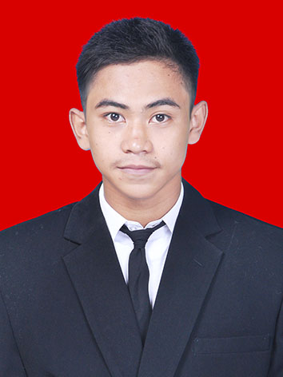

Ashabul Kahfi — lulusan S1 Manajemen dengan 5+ tahun pengalaman di manufaktur berskala besar: administrasi penggajian & absensi, workforce scheduling, sistem HRIS/ERP, hingga memimpin operasional 1 shift produksi berisi 85 orang.

Lulusan S1 Manajemen (Universitas Terbuka) dengan pengalaman lebih dari 5 tahun di lingkungan manufaktur berskala besar — mencakup administrasi penggajian & absensi, penjadwalan kerja lintas shift, penanganan keluhan karyawan (complaint handling), hingga kepemimpinan operasional atas tim produksi 85 orang. Terbiasa mengoperasikan sistem HRIS/ERP (Oracle E-Business Suite, Pro-Int HRIS) untuk administrasi data karyawan dan pelaporan manajemen. Berorientasi pada people management, kepatuhan K3, serta pengambilan keputusan berbasis data.
Rekapitulasi gaji & lembur, absensi karyawan, penyelesaian keluhan penggajian.
Penjadwalan kerja 3 shift tim 5R, koordinasi lintas fungsi.
Memimpin & mengawasi 1 shift regu produksi (85 orang) sebagai Acting Supervisor.
Oracle E-Business Suite, Pro-Int HRIS, OTLINK, Microsoft Office, Google Workspace.
Complaint handling, komunikasi lintas level dari operator hingga manajemen.
SOP, problem solving, public speaking, analisis data dengan Pivot Table.
Acting Supervisor Shift Produksi — memimpin, menjadwalkan, dan mengawasi operasional 1 shift regu produksi (85 orang), memastikan target output & kepatuhan K3.
Acting Production System Admin (Oracle EBS) — mengelola input & integrasi data produksi, memimpin rekonsiliasi stok fisik vs sistem.